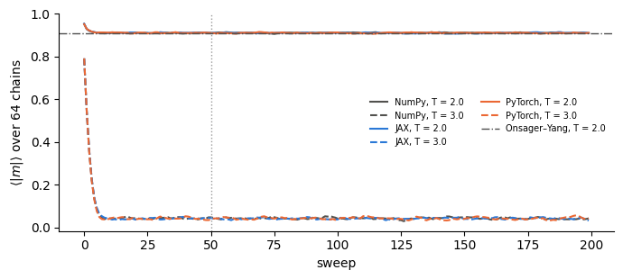

In Lab 002 we used NumPy, in Lab 003 PyTorch, in Lab 003c JAX. All three manipulate arrays, and two of them differentiate through the computation. Here we put them — together with TensorFlow and Keras 3 — on the same tasks and measure three things: the speed, i.e. the wall-clock time of the same computation; the cost of compilation, the one-off cost of a just-in-time (JIT) compiler before the first result; and the code, i.e. how the same training step looks in each library.
Timing a program is an experiment like any other: it has systematic errors (other programs running, different numbers of threads, a compiler working in the background) and statistical errors (the time fluctuates from run to run). Section 1 therefore fixes the measurement protocol. Sections 2–5 apply it to four tasks of increasing size: array operations (a matrix multiplication and a chain of elementwise operations), automatic differentiation (a gradient and a Hessian–vector product), a physics application (Metropolis sampling of the 2D Ising model), and training for one epoch of a multilayer perceptron (MLP) and a convolutional neural network (CNN) on MNIST. Section 6 shows the same training step in Flax NNX, PyTorch and Keras side by side. Section 7 collects all measurements in one table and one figure, Section 8 computes the key ratios, and Section 9 discusses the trade-offs between the libraries. Exercises close the notebook (Section 10).
The timings of this notebook are meaningful only under controlled conditions, so a few remarks on running it: 1. The timings are meaningful only if nothing else heavy runs on the machine. On a shared computer, pin the notebook to fixed cores, e.g. taskset -c 0-7 jupyter nbconvert --to notebook --execute Lab_003d_Framework_benchmark.ipynb. 2. The notebook uses the central processing unit (CPU) only (JAX_PLATFORMS=cpu, CUDA_VISIBLE_DEVICES=""), so that all libraries run on the same hardware. 3. Required packages: numpy, pandas, matplotlib, jax, flax, optax, torch, tensorflow, keras (version 3). In Google Colab all of them are pre-installed; the notebook reads the four MNIST files of Lab 016 (the constant MNIST_DIR in Section 5 points to them). 4. Total run time on an 8-core laptop CPU: several minutes.
1. Measurement protocol
Systematic effect
What we do
Different numbers of threads
Every library gets the same number of threads N_THREADS (8 here). The process is pinned to 8 cores with taskset, which caps all libraries at once; in addition each thread pool is set explicitly (table below).
Just-in-time compilation
The first call of a compiled function includes tracing and compilation. We time it separately and report the compilation overhead = first call − typical call.
Asynchronous execution
JAX returns before the result is computed (asynchronous dispatch). We call jax.block_until_ready inside the timed region. PyTorch and TensorFlow on the CPU execute operations synchronously.
Fluctuations
Each measurement is repeated; we report the median and the interquartile range (IQR, 25th–75th percentile). The median is insensitive to occasional slow repeats caused by other processes.
Idle threads competing for cores
OMP_WAIT_POLICY=PASSIVE: OpenMP worker threads (used by PyTorch) sleep while waiting for work instead of spinning. On a machine shared with other programs, spinning threads take cores away from the threads doing the work.
Other processes
We record the load average (the average number of runnable processes over the last minute) at the start and at the end. A load well above N_THREADS means the cores were shared and all times are inflated.
Unequal work
Same array sizes, same float32 precision, same algorithm; for training the same architecture, initialisation scheme, optimiser, batch size and batch order, and we report the reached test accuracy next to the time.
Thread settings used:
Library
Setting
NumPy (OpenBLAS / MKL)
OPENBLAS_NUM_THREADS, MKL_NUM_THREADS, OMP_NUM_THREADS before import, and threadpoolctl.threadpool_limits
JAX (XLA compiler)
no public thread-count setting; XLA sizes its thread pool from the cores visible to the process, i.e. from the taskset mask
All numbers in this notebook are CPU-only results on one laptop (Intel i7-11800H). On a graphics processing unit (GPU), with other array sizes or with larger models the ranking can change; the protocol carries over, the numbers do not.
The environment variables must be set before the libraries are imported, so they come first.
Code
import os, sys, time, json, subprocess, tempfile, gzip, platformN_THREADS =min(8, len(os.sched_getaffinity(0))) # cores this process may use (taskset mask), at most 8for var in ["OMP_NUM_THREADS", "MKL_NUM_THREADS", "OPENBLAS_NUM_THREADS"]: os.environ[var] =str(N_THREADS)os.environ["OMP_WAIT_POLICY"] ="PASSIVE"# waiting OpenMP threads sleep instead of spinningos.environ["JAX_PLATFORMS"] ="cpu"# JAX: CPU onlyos.environ["CUDA_VISIBLE_DEVICES"] =""# PyTorch / TensorFlow: hide any GPUos.environ["TF_CPP_MIN_LOG_LEVEL"] ="2"# silence TensorFlow info messagesWORKDIR = tempfile.mkdtemp(prefix="lab003d_") # scratch files: Keras script, MNIST arraysos.environ["TORCHINDUCTOR_CACHE_DIR"] = os.path.join(WORKDIR, "inductor") # empty cache → cold torch.compileT_START = time.perf_counter()LOAD_START = os.getloadavg()[0]print(f"cores visible to this process : {sorted(os.sched_getaffinity(0))}")print(f"N_THREADS : {N_THREADS}")print(f"1-minute load average at start: {LOAD_START:.1f} (machine has {os.cpu_count()} logical cores)")
cores visible to this process : [0, 1, 2, 3, 4, 5, 6, 7]
N_THREADS : 8
1-minute load average at start: 16.7 (machine has 16 logical cores)
Code
import numpy as npimport pandas as pdimport matplotlib.pyplot as pltfrom threadpoolctl import threadpool_limits, threadpool_infothreadpool_limits(N_THREADS)import jax, jax.numpy as jnpimport flaxfrom flax import nnximport optaximport torch, torch.nn as nn, torch.nn.functional as Ftorch.set_num_threads(N_THREADS)torch.set_num_interop_threads(1)import tensorflow as tftf.config.threading.set_intra_op_parallelism_threads(N_THREADS)tf.config.threading.set_inter_op_parallelism_threads(1)import kerasprint(f"Python {platform.python_version()} | NumPy {np.__version__} | JAX {jax.__version__} | Flax {flax.__version__} | "f"Optax {optax.__version__}\nPyTorch {torch.__version__} | TensorFlow {tf.__version__} | Keras {keras.__version__}")print("JAX devices :", jax.devices())print("PyTorch threads :", torch.get_num_threads())print("TF intra-op :", tf.config.threading.get_intra_op_parallelism_threads())print("BLAS thread pools:", [(p["internal_api"], p["num_threads"]) for p in threadpool_info()])
2026-10-15 23:06:00.087075: E external/local_xla/xla/stream_executor/cuda/cuda_platform.cc:51] failed call to cuInit: INTERNAL: CUDA error: Failed call to cuInit: CUDA_ERROR_NO_DEVICE: no CUDA-capable device is detected
The timing function
bench calls a function once (the first call, which includes any compilation), then n_rep more times, and stores the median and IQR of the repeats. The argument sync forces the computation to finish inside the timed region — for JAX this is jax.block_until_ready.
Code
RESULTS = [] # one dict per measurement; becomes the table in Section 7def bench(task, framework, variant, fn, sync=None, n_rep=7): sync = sync or (lambda r: r) t0 = time.perf_counter(); out = sync(fn()); first = time.perf_counter() - t0 ts = []for _ inrange(n_rep): t0 = time.perf_counter(); sync(fn()); ts.append(time.perf_counter() - t0) ts = np.array(ts) rec =dict(task=task, framework=framework, variant=variant, median_s=np.median(ts), q25_s=np.percentile(ts, 25), q75_s=np.percentile(ts, 75), first_call_s=first, n_rep=n_rep) RESULTS.append(rec)print(f"{framework:11s}{variant:22s} median {1e3*rec['median_s']:9.2f} ms "f"IQR [{1e3*rec['q25_s']:8.2f}, {1e3*rec['q75_s']:8.2f}] ms first call {1e3*first:9.1f} ms")return outjax_sync = jax.block_until_ready
2. Array operations: matrix multiplication and a chain of elementwise operations
The first task is the matrix multiplication \(C = AB\) of two \(2048\times 2048\)float32 matrices: \(2n^3 \approx 1.7\times 10^{10}\) floating-point operations (FLOP). All libraries hand this to an optimised BLAS-like kernel (Basic Linear Algebra Subprograms), so we expect similar times; the useful figure of merit is GFLOP/s \(= 2n^3/t/10^9\).
The second task is a chain of elementwise operations on \(10^7\) numbers, \[y = \tanh(x)\,e^{-x^2/2} + 0.1\,x^3 - \sin x .\] Each operation is cheap; the cost is moving 40 MB of data through memory. NumPy and the eager (op-by-op) modes evaluate the formula one operation at a time and store every intermediate array. A compiler (jax.jit, tf.function(jit_compile=True), torch.compile) can fuse the chain into a single loop that reads \(x\) once and writes \(y\) once.
Besides NumPy and the eager modes, we therefore time four variants. In JAX op-by-op the jnp functions are called directly, and each primitive is dispatched separately. In JAX jit the whole function is compiled by XLA (Accelerated Linear Algebra). TensorFlow tf.function + XLA uses tf.function(..., jit_compile=True), the TensorFlow route to the same XLA compiler. PyTorch torch.compile uses PyTorch’s compiler (TorchInductor), which generates and compiles C++ code; its cache starts empty, so the first call is a cold compilation.
NumPy eager median 66.06 ms IQR [ 64.40, 85.61] ms first call 127.5 ms
JAX op-by-op median 86.11 ms IQR [ 78.91, 92.68] ms first call 158.2 ms
JAX jit median 80.00 ms IQR [ 77.44, 84.31] ms first call 116.2 ms
PyTorch eager median 98.08 ms IQR [ 86.07, 121.08] ms first call 197.8 ms
TensorFlow eager median 82.31 ms IQR [ 81.11, 89.19] ms first call 113.9 ms
WARNING: All log messages before absl::InitializeLog() is called are written to STDERR
I0000 00:00:1792098364.407378 4067263 device_compiler.h:196] Compiled cluster using XLA! This line is logged at most once for the lifetime of the process.
TensorFlow tf.function + XLA median 78.82 ms IQR [ 63.03, 85.73] ms first call 185.2 ms
largest relative deviation from NumPy:
JAX op-by-op 6.2e-07
JAX jit 6.2e-07
PyTorch 5.6e-07
TF eager 5.6e-07
TF function 5.4e-07
GFLOP/s (median):
NumPy eager 260.0
JAX op-by-op 199.5
JAX jit 214.7
PyTorch eager 175.2
TensorFlow eager 208.7
TensorFlow tf.function + XLA 218.0
The deviations are zero or at the level of float32 round-off, which depends on the order in which each library’s kernel sums the products. Matrix multiplication is limited by arithmetic, and every library calls a tuned kernel, so the compiler has little to add here.
Code
N_ELEM =10**7x_np = rng.standard_normal(N_ELEM, dtype=np.float32)x_jx, x_pt, x_tf = jnp.asarray(x_np), torch.from_numpy(x_np), tf.constant(x_np)def make_chain(m):# the same formula for every library; m is the module providing tanh, exp, sinreturnlambda x: m.tanh(x) * m.exp(-0.5* x * x) +0.1* x**3- m.sin(x)chain_np, chain_jx, chain_pt, chain_tf = make_chain(np), make_chain(jnp), make_chain(torch), make_chain(tf.math)chain_jit = jax.jit(chain_jx)chain_tf_xla = tf.function(chain_tf, jit_compile=True)chain_pt_comp = torch.compile(chain_pt)task ="elementwise chain 1e7"y_ref = bench(task, "NumPy", "eager", lambda: chain_np(x_np))Y = {"JAX op-by-op": bench(task, "JAX", "op-by-op", lambda: chain_jx(x_jx), jax_sync),"JAX jit": bench(task, "JAX", "jit", lambda: chain_jit(x_jx), jax_sync),"PyTorch": bench(task, "PyTorch", "eager", lambda: chain_pt(x_pt)),"torch.compile": bench(task, "PyTorch", "torch.compile", lambda: chain_pt_comp(x_pt)),"TF eager": bench(task, "TensorFlow", "eager", lambda: chain_tf(x_tf)),"TF function": bench(task, "TensorFlow", "tf.function + XLA", lambda: chain_tf_xla(x_tf))}print("\nlargest absolute deviation from NumPy:")for k, v in Y.items():print(f" {k:13s}{np.abs(np.asarray(v) - y_ref).max():.1e}")
NumPy eager median 1044.98 ms IQR [ 1032.40, 1071.87] ms first call 1043.9 ms
JAX op-by-op median 290.82 ms IQR [ 286.73, 294.53] ms first call 857.8 ms
JAX jit median 78.86 ms IQR [ 75.34, 87.04] ms first call 175.8 ms
PyTorch eager median 226.26 ms IQR [ 226.16, 231.19] ms first call 236.4 ms
PyTorch torch.compile median 39.11 ms IQR [ 33.24, 43.00] ms first call 16220.3 ms
TensorFlow eager median 146.88 ms IQR [ 144.00, 154.87] ms first call 244.2 ms
TensorFlow tf.function + XLA median 56.53 ms IQR [ 55.78, 58.35] ms first call 214.0 ms
largest absolute deviation from NumPy:
JAX op-by-op 1.9e-06
JAX jit 1.9e-06
PyTorch 1.9e-06
torch.compile 1.9e-06
TF eager 1.9e-06
TF function 1.9e-06
All versions agree with NumPy to a few units in the last place of float32 (for \(|y|\) between 8 and 16 one unit is \(2^{-20}\approx 9.5\times10^{-7}\)): libraries may use different approximations of tanh, exp and sin. The relative speed of op-by-op and compiled code is read off in Section 8.
Thread scaling
Before trusting the timings, we test whether the cores were really available. If they were, more threads should never make an operation slower. We time the PyTorch elementwise chain with 1, 2, 4 and 8 threads. A time that grows with the number of threads signals that the cores are shared with other programs: an operation split over \(n\) threads finishes only when the slowest thread does.
Code
for n in (1, 2, 4, 8):if n > N_THREADS: break torch.set_num_threads(n) chain_pt(x_pt) ts = []for _ inrange(3): t0 = time.perf_counter(); chain_pt(x_pt); ts.append(time.perf_counter() - t0)print(f"PyTorch elementwise chain, {n} thread(s): median {1e3* np.median(ts):7.1f} ms")torch.set_num_threads(N_THREADS)
PyTorch elementwise chain, 1 thread(s): median 452.9 ms
PyTorch elementwise chain, 2 thread(s): median 235.6 ms
PyTorch elementwise chain, 4 thread(s): median 227.0 ms
PyTorch elementwise chain, 8 thread(s): median 241.5 ms
3. Automatic differentiation: gradient and Hessian–vector product
We take a function of a \(1000\times 1000\) matrix \(W\) (\(10^6\) parameters) with fixed data \(X\in\mathbb{R}^{256\times1000}\): \[L(W) = \frac{1}{256}\sum_{b,j}\log\cosh\big((XW)_{bj}\big) + \frac{\lambda}{2}\lVert W\rVert^2,\qquad \lambda = 10^{-3}.\] Both derivatives are known in closed form, so we can check every library: \[\nabla L = \tfrac{1}{256}X^{\mathsf T}\tanh(XW) + \lambda W,\qquad
H V = \tfrac{1}{256}X^{\mathsf T}\big[(1-\tanh^2(XW))\odot (XV)\big] + \lambda V .\] The Hessian–vector product (HVP) \(HV\) costs about as much as a few gradients, although the Hessian itself has \(10^{12}\) entries. Each library builds it differently. JAX uses forward-over-reverse differentiation, jax.jvp(jax.grad(L), (W,), (V,)). PyTorch uses a double backward pass, torch.autograd.grad(..., create_graph=True) followed by a second grad. TensorFlow uses two nested tf.GradientTapes.
JAX op-by-op median 36.94 ms IQR [ 29.75, 41.22] ms first call 1518.2 ms
JAX jit median 12.81 ms IQR [ 12.33, 14.25] ms first call 159.7 ms
PyTorch eager median 34.31 ms IQR [ 28.82, 38.16] ms first call 55.3 ms
TensorFlow eager median 33.85 ms IQR [ 32.24, 37.31] ms first call 229.4 ms
TensorFlow tf.function + XLA median 15.30 ms IQR [ 14.19, 17.93] ms first call 218.5 ms
JAX op-by-op median 61.35 ms IQR [ 55.05, 64.33] ms first call 1067.2 ms
JAX jit median 17.06 ms IQR [ 16.30, 22.70] ms first call 178.1 ms
PyTorch eager median 62.00 ms IQR [ 60.21, 64.66] ms first call 66.0 ms
TensorFlow eager median 70.80 ms IQR [ 70.11, 72.08] ms first call 100.1 ms
TensorFlow tf.function + XLA median 18.65 ms IQR [ 17.10, 22.14] ms first call 305.9 ms
relative error with respect to the closed form: gradient HVP
JAX op-by-op 6.1e-07 5.5e-07
JAX jit 6.1e-07 5.5e-07
PyTorch 5.8e-07 5.8e-07
TF eager 6.7e-07 5.2e-07
TF function 5.8e-07 5.1e-07
All libraries agree with the closed-form derivatives to float32 precision. The derivative code is generated automatically from the code of \(L\); only the style differs — function transformations in JAX (grad, jvp), a recorded graph in PyTorch and TensorFlow.
4. Physics: Metropolis sampling of the 2D Ising model
The Ising model on an \(L\times L\) periodic lattice, \(E = -\sum_{\langle ij\rangle} s_i s_j\), \(s_i=\pm1\), has a phase transition at \(T_c = 2/\ln(1+\sqrt2) \approx 2.269\) (units \(J = k_B = 1\)). A checkerboard Metropolis sweep colours the lattice like a chessboard; sites of one colour do not interact with each other, so all of them can be updated at once. For the sites of one colour we compute the neighbour sum \(h_i\) with four rolls, so that the energy change of flipping \(s_i\) is \(\Delta E_i = 2 s_i h_i\), and flip every site with probability \(\min(1, e^{-\Delta E_i/T})\); then we repeat this for the other colour.
We run 64 independent chains of \(64\times64\) spins for 200 sweeps from the ordered state \(s_i=+1\), discard the first 50 sweeps and average \(|m| = |\frac{1}{L^2}\sum_i s_i|\) over the remaining 150. The error bar is the standard deviation of the 64 chain averages divided by \(\sqrt{64}\) (chains are independent). Temperatures: \(T = 2.0 < T_c\) and \(T = 3.0 > T_c\). For \(T<T_c\) the infinite-lattice result of Onsager and Yang, \(m = [1-\sinh^{-4}(2/T)]^{1/8}\), is a reference.
The three implementations follow the style of each library. The NumPy version is vectorised over chains and sites, with a Python loop over sweeps. The JAX version is the code for one chain: jax.lax.scan replaces the loop over sweeps, jax.vmap adds the chain dimension, and jax.jit compiles everything into one program. The PyTorch version is the NumPy code with torch functions, executed eagerly.
Each library has its own random-number generator, so the chains differ; the averages must agree within errors.
Code
L_ISING, N_CHAINS, N_SWEEPS, N_THERM =64, 64, 200, 50T_LOW, T_HIGH =2.0, 3.0ii, jj = np.indices((L_ISING, L_ISING))MASKS_NP = [((ii + jj) %2== c) for c in (0, 1)] # the two checkerboard coloursdef ising_numpy(T, seed=0): rng = np.random.default_rng(seed) s = np.ones((N_CHAINS, L_ISING, L_ISING), np.float32) absm = np.empty((N_SWEEPS, N_CHAINS), np.float32)for t inrange(N_SWEEPS):for mask in MASKS_NP: h = np.roll(s, 1, 1) + np.roll(s, -1, 1) + np.roll(s, 1, 2) + np.roll(s, -1, 2) u = rng.random(s.shape, dtype=np.float32) s = np.where(mask & (u < np.exp(-2.0* s * h / T)), -s, s) absm[t] = np.abs(s.mean(axis=(1, 2)))return absmMASKS_JX = [jnp.asarray(m) for m in MASKS_NP]def ising_one_chain(key, T):def half_sweep(s, key, mask): h = jnp.roll(s, 1, 0) + jnp.roll(s, -1, 0) + jnp.roll(s, 1, 1) + jnp.roll(s, -1, 1) u = jax.random.uniform(key, s.shape)return jnp.where(mask & (u < jnp.exp(-2.0* s * h / T)), -s, s)def sweep(s, key): k0, k1 = jax.random.split(key) s = half_sweep(half_sweep(s, k0, MASKS_JX[0]), k1, MASKS_JX[1])return s, jnp.abs(s.mean()) _, absm = jax.lax.scan(sweep, jnp.ones((L_ISING, L_ISING)), jax.random.split(key, N_SWEEPS))return absm # shape (N_SWEEPS,)ising_jax = jax.jit(jax.vmap(ising_one_chain, in_axes=(0, None), out_axes=1)) # T is traced: one compilation for all TMASKS_PT = [torch.from_numpy(m) for m in MASKS_NP]def ising_torch(T, seed=0): g = torch.Generator().manual_seed(seed) s = torch.ones((N_CHAINS, L_ISING, L_ISING)) absm = torch.empty((N_SWEEPS, N_CHAINS))for t inrange(N_SWEEPS):for mask in MASKS_PT: h = s.roll(1, 1) + s.roll(-1, 1) + s.roll(1, 2) + s.roll(-1, 2) u = torch.rand(s.shape, generator=g) s = torch.where(mask & (u < torch.exp(-2.0* s * h / T)), -s, s) absm[t] = s.mean(dim=(1, 2)).abs()return absmkeys = jax.random.split(jax.random.key(0), N_CHAINS)task ="Ising 64 chains × 64², 200 sweeps"ABSM = {}ABSM[("NumPy", T_LOW)] = bench(task, "NumPy", "vectorised", lambda: ising_numpy(T_LOW), n_rep=2)ABSM[("JAX", T_LOW)] = bench(task, "JAX", "jit + scan + vmap", lambda: ising_jax(keys, T_LOW), jax_sync, n_rep=2)ABSM[("PyTorch", T_LOW)] = bench(task, "PyTorch", "eager", lambda: ising_torch(T_LOW), n_rep=2)ABSM[("NumPy", T_HIGH)] = ising_numpy(T_HIGH)ABSM[("JAX", T_HIGH)] = ising_jax(keys, T_HIGH)ABSM[("PyTorch", T_HIGH)] = ising_torch(T_HIGH)
NumPy vectorised median 1777.81 ms IQR [ 1671.10, 1884.51] ms first call 1889.6 ms
JAX jit + scan + vmap median 4547.54 ms IQR [ 4531.95, 4563.13] ms first call 7557.9 ms
PyTorch eager median 2905.48 ms IQR [ 2881.06, 2929.90] ms first call 2769.8 ms
Code
def chain_estimate(absm): per_chain = np.asarray(absm)[N_THERM:].mean(axis=0) # time average in each chainreturn per_chain.mean(), per_chain.std(ddof=1) / np.sqrt(len(per_chain))m_onsager = (1- np.sinh(2/ T_LOW)**-4)**(1/8)rows = []for T in (T_LOW, T_HIGH):for fw in ("NumPy", "JAX", "PyTorch"): mean, err = chain_estimate(ABSM[(fw, T)]) rows.append(dict(T=T, framework=fw, mean_abs_m=mean, error=err))ising_df = pd.DataFrame(rows)print(ising_df.to_string(index=False, float_format="%.4f"))print(f"\nOnsager-Yang (L → ∞) at T = {T_LOW}: m = {m_onsager:.4f}")print("\nlargest pairwise deviation in units of the combined error:")for T in (T_LOW, T_HIGH): d = ising_df[ising_df["T"] == T] z =max(abs(a.mean_abs_m - b.mean_abs_m) / np.hypot(a.error, b.error)for _, a in d.iterrows() for _, b in d.iterrows() if a.framework < b.framework)print(f" T = {T}: {z:.2f} σ")fig, ax = plt.subplots(figsize=(7, 3.2))for fw, c inzip(("NumPy", "JAX", "PyTorch"), ("#52514e", "#2a78d6", "#eb6834")):for T, ls in ((T_LOW, "-"), (T_HIGH, "--")): ax.plot(np.asarray(ABSM[(fw, T)]).mean(axis=1), ls, color=c, lw=1.5, label=f"{fw}, T = {T}")ax.axvline(N_THERM, color="0.6", lw=1, ls=":")ax.axhline(m_onsager, color="0.3", lw=1, ls="-.", label="Onsager–Yang, T = 2.0")ax.set_xlabel("sweep"); ax.set_ylabel(r"$\langle |m| \rangle$ over 64 chains")ax.legend(fontsize=7, ncol=2, frameon=False); ax.spines[["top", "right"]].set_visible(False)plt.tight_layout(); plt.show()
T framework mean_abs_m error
2.0000 NumPy 0.9117 0.0003
2.0000 JAX 0.9108 0.0003
2.0000 PyTorch 0.9110 0.0003
3.0000 NumPy 0.0427 0.0005
3.0000 JAX 0.0419 0.0007
3.0000 PyTorch 0.0423 0.0006
Onsager-Yang (L → ∞) at T = 2.0: m = 0.9113
largest pairwise deviation in units of the combined error:
T = 2.0: 2.12 σ
T = 3.0: 0.87 σ

The three implementations sample the same distribution: at both temperatures the averages agree within the statistical error. With three pairs compared per temperature, a largest deviation of up to about 2σ occurs by chance; a deviation above 3σ would point to a bug. Below \(T_c\) the finite lattice gives a value close to the infinite-lattice \(m\); above \(T_c\), \(\langle|m|\rangle\) is small and nonzero only because \(L\) is finite (it scales as \(L^{-1}\) in the disordered phase).
Cost of random-number generation
Each sweep draws one uniform random number per site, \(2\times 200\times 64\times 64^2 \approx 1.0\times10^8\) numbers per run. NumPy uses the PCG64 generator (permuted congruential generator, 64-bit output); JAX by default uses Threefry, a counter-based generator designed so that independent streams can be split off a key deterministically and in parallel (jax.random.split). To see how much of the sampling time goes into random numbers, we time the generation of the same amount of random numbers alone.
JAX (Threefry, jit) 1.05e+08 uniform numbers: 1.91 s
PyTorch (Mersenne Twister) 1.05e+08 uniform numbers: 1.17 s
5. Training: one epoch of an MLP and a CNN on MNIST
MNIST (Modified National Institute of Standards and Technology database) contains 70 000 grey-scale images of handwritten digits, \(28\times28\) pixels: 60 000 for training, 10 000 for testing. We train two models, identical in every library. The MLP (multilayer perceptron) has layers \(784 \to 256 \to 256 \to 10\) with rectified linear unit (ReLU) activations. The CNN (convolutional neural network) is Conv \(3\times3\), 16 channels → ReLU → max-pool 2 → Conv \(3\times3\), 32 channels → ReLU → max-pool 2 → Dense 128 → ReLU → Dense 10, without padding.
Common settings: Glorot-uniform initialisation of all weights, zero biases; Adam with learning rate \(10^{-3}\) and \(\varepsilon = 10^{-8}\); cross-entropy loss on logits; batch size 128; the same random order of the training images for every library; 468 full batches = one epoch (the last 96 images are dropped so that all batches have the same shape and the compiled step is reused).
Each run starts with a warm-up of 10 batches (from a different permutation), which includes the compilation of the training step and is reported as the first-call time. Then one epoch is timed, split into 6 chunks of 78 batches; the epoch time is the sum, and the spread is the IQR of the 6 chunk times (scaled to an epoch). Finally, the test accuracy on the 10 000 test images is measured. Accuracy after one epoch tells us whether the libraries did the same job — a fast but badly trained model would not be a fair comparison.
Code
import urllib.requestMNIST_DIR ="data/MNIST_raw"MNIST_FILES = ["train-images-idx3-ubyte.gz", "train-labels-idx1-ubyte.gz","t10k-images-idx3-ubyte.gz", "t10k-labels-idx1-ubyte.gz"]ifnotall(os.path.exists(f"{MNIST_DIR}/{f}") for f in MNIST_FILES): os.makedirs(MNIST_DIR, exist_ok=True)for f in MNIST_FILES: urllib.request.urlretrieve(f"https://storage.googleapis.com/cvdf-datasets/mnist/{f}", f"{MNIST_DIR}/{f}")def read_idx(name, offset):with gzip.open(os.path.join(MNIST_DIR, name)) as f:return np.frombuffer(f.read(), np.uint8, offset=offset)x_train = (read_idx("train-images-idx3-ubyte.gz", 16).reshape(-1, 28, 28, 1) /255).astype(np.float32)y_train = read_idx("train-labels-idx1-ubyte.gz", 8).astype(np.int32)x_test = (read_idx("t10k-images-idx3-ubyte.gz", 16).reshape(-1, 28, 28, 1) /255).astype(np.float32)y_test = read_idx("t10k-labels-idx1-ubyte.gz", 8).astype(np.int32)BATCH, N_STEPS, N_WARM, N_CHUNKS, LR, EPS =128, 60000//128, 10, 6, 1e-3, 1e-8perm_rng = np.random.default_rng(1)WARM_IDX = perm_rng.permutation(len(x_train))[:N_WARM * BATCH].reshape(N_WARM, BATCH)EPOCH_IDX = perm_rng.permutation(len(x_train))[:N_STEPS * BATCH].reshape(N_STEPS, BATCH)CHUNKS = np.array_split(EPOCH_IDX, N_CHUNKS)print(f"train {x_train.shape}, test {x_test.shape}; {N_STEPS} batches of {BATCH} per epoch, chunks of {len(CHUNKS[0])}")TRAIN = [] # one dict per training rundef time_training(framework, model_name, run_steps, evaluate):# run_steps(idx) trains on the batches idx[k] and returns when all work is finished t0 = time.perf_counter(); run_steps(WARM_IDX); t_warm = time.perf_counter() - t0 chunk_t = []for idx in CHUNKS: t0 = time.perf_counter(); run_steps(idx); chunk_t.append(time.perf_counter() - t0)return record_training(framework, model_name, t_warm, chunk_t, evaluate())def record_training(framework, model_name, t_warm, chunk_t, acc): chunk_t = np.array(chunk_t) per_epoch = N_CHUNKS * chunk_t rec =dict(task=f"{model_name}: 1 epoch", framework=framework, variant="train", median_s=chunk_t.sum(), q25_s=np.percentile(per_epoch, 25), q75_s=np.percentile(per_epoch, 75), first_call_s=t_warm, step_time_s=chunk_t.sum() / N_STEPS, test_acc=acc, n_rep=N_CHUNKS) TRAIN.append(rec)print(f"{framework:16s}{model_name}: epoch {rec['median_s']:6.2f} s ({1e3*rec['step_time_s']:5.1f} ms/step) "f"warm-up {t_warm:5.2f} s test accuracy {acc:.4f}")
train (60000, 28, 28, 1), test (10000, 28, 28, 1); 468 batches of 128 per epoch, chunks of 78
Flax NNX
The model is a Python class (as in PyTorch); nnx.jit compiles the whole training step — forward pass, gradient and Adam update — into one XLA program.
JAX / Flax NNX MLP: epoch 1.52 s ( 3.2 ms/step) warm-up 0.74 s test accuracy 0.9625
CNN: 108618 parameters
JAX / Flax NNX CNN: epoch 26.59 s ( 56.8 ms/step) warm-up 2.36 s test accuracy 0.9770
PyTorch
PyTorch stores images as (batch, channels, height, width); we transpose the arrays once, outside the timed region. The default PyTorch initialisation differs from Glorot, so we re-initialise the weights.
Code
x_train_pt = torch.from_numpy(np.ascontiguousarray(x_train.transpose(0, 3, 1, 2)))x_test_pt = torch.from_numpy(np.ascontiguousarray(x_test.transpose(0, 3, 1, 2)))y_train_pt = torch.from_numpy(y_train.astype(np.int64))def mlp_torch():return nn.Sequential(nn.Flatten(), nn.Linear(784, 256), nn.ReLU(), nn.Linear(256, 256), nn.ReLU(), nn.Linear(256, 10))def cnn_torch():return nn.Sequential(nn.Conv2d(1, 16, 3), nn.ReLU(), nn.MaxPool2d(2), nn.Conv2d(16, 32, 3), nn.ReLU(), nn.MaxPool2d(2), nn.Flatten(), nn.Linear(5*5*32, 128), nn.ReLU(), nn.Linear(128, 10))def glorot_init_(model):for m in model.modules():ifisinstance(m, (nn.Linear, nn.Conv2d)): nn.init.xavier_uniform_(m.weight); nn.init.zeros_(m.bias)return modeldef train_torch(builder, name): torch.manual_seed(0) model = glorot_init_(builder()) optimizer = torch.optim.Adam(model.parameters(), lr=LR, eps=EPS)def run_steps(idx): model.train()for b in idx: b = torch.from_numpy(b) optimizer.zero_grad() loss = F.cross_entropy(model(x_train_pt[b]), y_train_pt[b]) loss.backward() optimizer.step()def evaluate(): model.eval()with torch.no_grad(): pred = model(x_test_pt).argmax(1).numpy()returnfloat((pred == y_test).mean())print(f"{name}: {sum(p.numel() for p in model.parameters())} parameters")return time_training("PyTorch", name, run_steps, evaluate)train_torch(mlp_torch, "MLP"); train_torch(cnn_torch, "CNN");
MLP: 269322 parameters
PyTorch MLP: epoch 6.16 s ( 13.2 ms/step) warm-up 0.13 s test accuracy 0.9619
CNN: 108618 parameters
PyTorch CNN: epoch 26.58 s ( 56.8 ms/step) warm-up 0.30 s test accuracy 0.9796
Keras 3 with three backends, each in its own process
Keras 3 is a front end: the same model code runs on JAX, PyTorch or TensorFlow, chosen by the environment variable KERAS_BACKEND. Keras reads it once, at import time, and a Python module is imported only once per process — so one process can use only one backend. (Importing JAX, PyTorch and TensorFlow into the same process would also mix three thread pools, which would bias the timings.) We therefore write a small script, run it once per backend with subprocess, and collect the results as JSON. The child processes inherit the taskset mask and get the same thread settings.
Keras trains with model.fit, which compiles the step automatically (jit_compile="auto": XLA for the JAX backend; tf.function graph execution without XLA for the TensorFlow backend, because Keras switches XLA off on machines without a GPU; plain eager execution for the PyTorch backend). The script reports the value of model.jit_compile it used.
Code
KERAS_SCRIPT =r"""import os, sys, json, timebackend, n_threads, data_path = sys.argv[1], int(sys.argv[2]), sys.argv[3]os.environ["KERAS_BACKEND"] = backend # must be set before `import keras`if backend == "torch": import torch torch.set_num_threads(n_threads); torch.set_num_interop_threads(1)if backend == "tensorflow": import tensorflow as tf tf.config.threading.set_intra_op_parallelism_threads(n_threads) tf.config.threading.set_inter_op_parallelism_threads(1)import numpy as npimport kerasfrom keras import layersd = np.load(data_path)x_train, y_train, x_test, y_test = d["x_train"], d["y_train"], d["x_test"], d["y_test"]warm_idx, chunks = d["warm_idx"], [d[k] for k in sorted(k for k in d.files if k.startswith("chunk_"))]def build(kind): if kind == "MLP": body = [layers.Flatten(), layers.Dense(256, activation="relu"), layers.Dense(256, activation="relu"), layers.Dense(10)] else: body = [layers.Conv2D(16, 3, activation="relu"), layers.MaxPooling2D(2), layers.Conv2D(32, 3, activation="relu"), layers.MaxPooling2D(2), layers.Flatten(), layers.Dense(128, activation="relu"), layers.Dense(10)] return keras.Sequential([keras.Input((28, 28, 1))] + body) # Keras default init: Glorot uniform, zero biasout = []for kind in ("MLP", "CNN"): keras.utils.set_random_seed(0) model = build(kind) model.compile(optimizer=keras.optimizers.Adam(1e-3, epsilon=1e-8), loss=keras.losses.SparseCategoricalCrossentropy(from_logits=True)) def run_steps(idx): b = idx.ravel() model.fit(x_train[b], y_train[b], batch_size=idx.shape[1], epochs=1, shuffle=False, verbose=0) t0 = time.perf_counter(); run_steps(warm_idx); t_warm = time.perf_counter() - t0 chunk_t = [] for idx in chunks: t0 = time.perf_counter(); run_steps(idx); chunk_t.append(time.perf_counter() - t0) pred = model.predict(x_test, batch_size=1000, verbose=0).argmax(-1) out.append(dict(model=kind, n_params=model.count_params(), jit_compile=bool(model.jit_compile), t_warm=t_warm, chunk_t=chunk_t, test_acc=float((pred == y_test).mean())))print("RESULT_JSON " + json.dumps(out))"""script_path = os.path.join(WORKDIR, "keras_bench.py")data_path = os.path.join(WORKDIR, "mnist_bench.npz")withopen(script_path, "w") as f: f.write(KERAS_SCRIPT)np.savez(data_path, x_train=x_train, y_train=y_train, x_test=x_test, y_test=y_test, warm_idx=WARM_IDX,**{f"chunk_{k}": c for k, c inenumerate(CHUNKS)})for backend in ("jax", "torch", "tensorflow"): env =dict(os.environ, KERAS_BACKEND=backend, JAX_PLATFORMS="cpu", CUDA_VISIBLE_DEVICES="") proc = subprocess.run([sys.executable, script_path, backend, str(N_THREADS), data_path], env=env, capture_output=True, text=True) line = [l for l in proc.stdout.splitlines() if l.startswith("RESULT_JSON ")]if proc.returncode !=0ornot line:print(proc.stderr[-3000:]);raiseRuntimeError(f"Keras subprocess for backend {backend} failed")for r in json.loads(line[0][len("RESULT_JSON "):]):print(f"Keras [{backend}] {r['model']}: {r['n_params']} parameters, model.jit_compile = {r['jit_compile']}") record_training(f"Keras [{backend}]", r["model"], r["t_warm"], r["chunk_t"], r["test_acc"])
Keras [jax] MLP: 269322 parameters, model.jit_compile = True
Keras [jax] MLP: epoch 1.42 s ( 3.0 ms/step) warm-up 1.05 s test accuracy 0.9618
Keras [jax] CNN: 108618 parameters, model.jit_compile = True
Keras [jax] CNN: epoch 27.52 s ( 58.8 ms/step) warm-up 2.54 s test accuracy 0.9749
Keras [torch] MLP: 269322 parameters, model.jit_compile = False
Keras [torch] MLP: epoch 11.33 s ( 24.2 ms/step) warm-up 0.30 s test accuracy 0.9625
Keras [torch] CNN: 108618 parameters, model.jit_compile = False
Keras [torch] CNN: epoch 32.43 s ( 69.3 ms/step) warm-up 0.47 s test accuracy 0.9784
Keras [tensorflow] MLP: 269322 parameters, model.jit_compile = False
Keras [tensorflow] MLP: epoch 5.73 s ( 12.2 ms/step) warm-up 1.76 s test accuracy 0.9651
Keras [tensorflow] CNN: 108618 parameters, model.jit_compile = False
Keras [tensorflow] CNN: epoch 10.68 s ( 22.8 ms/step) warm-up 1.88 s test accuracy 0.9775
6. Training step in Flax NNX, PyTorch and Keras
The three listings show the same training step, expressed in the style of each library; the table below them names the differences.
function transformation nnx.value_and_grad returns the gradients
loss.backward() stores them in p.grad of each parameter
hidden inside fit
Optimiser state
in nnx.Optimizer (from Optax), updated by optimizer.update(model, grads)
inside torch.optim.Adam; gradients must be zeroed each step
hidden inside fit
Compilation
explicit: @nnx.jit on the whole step
none by default (opt-in torch.compile)
automatic in fit (backend-dependent)
Training loop
coded by the user
coded by the user
fit (a custom loop is possible, but backend-specific)
Debugging
print inside @nnx.jit shows tracers, not values (use jax.debug.print)
ordinary Python debugging, every line runs immediately
errors surface inside fit; run_eagerly=True helps
7. Table and figure of all measurements
The table has the following columns: median_s — typical time of one call (for training: one epoch); IQR_s — interquartile range of the repeats; first_call_s — the first call (for training: the 10 warm-up batches); compile_overhead_s — first call minus the typical call (for training: warm-up minus 10 typical steps). A negative overhead within the IQR means no measurable compilation cost. JAX op-by-op also has a first-call cost: every primitive (jnp.tanh, jnp.matmul, …) is compiled once for each new input shape and then cached.
matmul: slowest / fastest median 1.48
elementwise: NumPy / JAX jit 13.3
elementwise: PyTorch eager / torch.compile 5.78
elementwise: TF eager / tf.function + XLA 2.6
elementwise: torch.compile first call [s] 16.2
elementwise: JAX jit first call [s] 0.176
gradient: JAX op-by-op / JAX jit 2.88
gradient: PyTorch / JAX jit 2.68
HVP / gradient time, JAX jit 1.33
HVP / gradient time, PyTorch 1.81
HVP / gradient time, TF eager 2.09
Ising: NumPy / JAX 0.391
Ising: PyTorch / JAX 0.639
Ising: JAX compile overhead [s] 3.01
MLP: slowest / fastest epoch 7.97
MLP: fastest = Keras [jax], slowest = Keras [torch]
MLP: test accuracy range (max − min) 0.0033
CNN: slowest / fastest epoch 3.04
CNN: fastest = Keras [tensorflow], slowest = Keras [torch]
CNN: test accuracy range (max − min) 0.0047
total run time of the notebook: 340 s
1-minute load average: start 16.7, end 13.4 (logical cores: 16, threads per library: 8)
9. Trade-offs
The numbers below are from the run stored in this notebook: CPU only, 8 threads per library, 1-minute load average 16.7 at the start and 13.4 at the end on 16 logical cores. Other programs were running. The thread-scaling check in Section 2 shows it: the PyTorch elementwise chain took 241 ms with 8 threads and 227 ms with 4. A re-run will give somewhat different times. On a GPU, or with much larger models, the ranking can change.
9.1 One large kernel
For a single large kernel the library hardly matters. The \(2048\times2048\) matrix multiplication took 66–98 ms in every library (175–260 GFLOP/s). The slowest-to-fastest ratio is 1.48, comparable with the spread between repeats (PyTorch IQR 35 ms). Each library passes the work to an optimised linear-algebra kernel.
9.2 Many small operations
For many small operations compilation pays off. The elementwise chain on \(10^7\) numbers took 1.05 s in NumPy (NumPy runs elementwise operations on one thread) and 0.15–0.29 s in the eager modes of TensorFlow, PyTorch and JAX. Compiling the formula into one fused loop cut this to 79 ms (JAX jit), 57 ms (TensorFlow + XLA) and 39 ms (torch.compile). Compared with NumPy, JAX jit is 13× faster; compared with eager PyTorch, torch.compile is 5.8× faster.
9.3 Cost of compilation
Compilation is not free, and its cost differs by two orders of magnitude between compilers. XLA compilation (JAX jit, tf.function + XLA) added 0.04–0.3 s to the first call. A cold torch.compile of the same formula took 16.2 s, because it generates and compiles C++ code. It saves \(226 - 39 = 187\) ms per call, so it pays off only after about 87 calls. JAX also has a cost in op-by-op mode: the first gradient call took 1.5 s, because each primitive is compiled once per shape.
9.4 Automatic differentiation
All libraries compute the same derivatives, at different speeds. Every library reproduced the closed-form gradient and Hessian–vector product to a relative error below \(10^{-6}\). The compiled gradient took 12.8 ms in JAX and 15.3 ms in TensorFlow + XLA, against 34 ms for eager PyTorch and eager TensorFlow. The Hessian–vector product cost 1.3 gradients in JAX jit, 1.8 in PyTorch and 2.1 in eager TensorFlow.
9.5 The Ising sampler
The Ising model shows that compilation does not guarantee speed. All three samplers give the same physics: the largest pairwise deviation is 2.1σ at \(T=2.0\) and 0.9σ at \(T=3.0\), and \(\langle|m|\rangle = 0.911\) matches Onsager–Yang (0.9113). Here vectorised NumPy was the fastest (1.78 s), ahead of PyTorch (2.91 s) and the compiled JAX version (4.55 s, plus 3.0 s of compilation). Random numbers explain part of the gap. Generating the same \(1.05\times10^8\) uniform numbers alone took 0.54 s in NumPy (PCG64), 1.17 s in PyTorch and 1.91 s in JAX (Threefry), i.e. 42 % of the JAX run time. In exchange, Threefry gives reproducible, independent streams through jax.random.split, and the JAX code is written for one chain and turned into 64 chains with vmap.
9.6 Training
Training times are compared at equal accuracy. After one epoch the test accuracies agree within 0.33 percentage points for the MLP (96.2–96.5 %) and within 0.47 points for the CNN (97.5–98.0 %), so the timings compare the same job.
For the small MLP the per-step overhead dominates. The JAX-based runs, which compile the whole step (Flax NNX 1.52 s, Keras [jax] 1.42 s per epoch, 3 ms/step), were 3.8–8× faster than eager PyTorch (6.16 s), Keras [tensorflow] (5.73 s) and Keras [torch] (11.33 s). For the CNN the quality of the kernels dominates. Keras [tensorflow] was fastest (10.7 s per epoch) although its step was not XLA-compiled (model.jit_compile = False). The XLA-compiled JAX step (26.6 s) was no faster than eager PyTorch (26.6 s). When convolutions dominate, the speed of the convolution kernels matters more than fusing operations.
The Keras front end has a cost on some backends: Keras [jax] matched Flax NNX within the IQR (1.42 vs 1.52 s, MLP), while Keras [torch] was 1.8× slower than plain PyTorch (11.33 vs 6.16 s, MLP). The warm-up took 0.7–1.9 s for the compiled steps (JAX, Keras [jax], Keras [tensorflow]), and at most 0.06 s for eager PyTorch and Keras [torch].
9.7 Criteria beyond speed
Speed is one criterion among several, as the table summarises.
NumPy
JAX / Flax NNX
PyTorch
Keras 3
Speed of compiled code in this notebook
no compiler; fastest for the Ising sampler
fastest for gradients and HVP (TensorFlow + XLA close behind) and for the MLP step
eager mode competitive for the CNN; torch.compile fastest for the elementwise chain
backend-dependent: fastest CNN on TensorFlow
Compile time
none
0.04–3 s here; once per input shape
none in eager mode; 16 s for a cold torch.compile
as the backend
Flexibility
arrays only, no derivatives
composable transformations: grad, jvp, vmap, scan (Sections 3, 4)
derivatives of any Python code run eagerly
high-level fit; one model code for three backends (Section 5)
Debugging
plain Python
inside jit values are tracers; use jax.debug.print
plain Python, line by line
errors surface inside fit; run_eagerly=True
Fixed shapes required
no
yes, otherwise recompilation (Exercise 3)
no
no
No single library wins. Use NumPy for small array code without derivatives. JAX suits code that is transformed — differentiated, vectorised over chains or parameters, compiled once and run many times. PyTorch suits models whose structure changes from step to step and code that you debug line by line. Keras suits standard models trained with fit, when the backend should stay a free choice. Measure on your own problem and hardware, with the protocol of Section 1, before you decide.
10. Exercises
Repeat Section 2 with N_THREADS = 1, 2, 4, 8 (restart the kernel each time — thread pools are fixed at import). Plot GFLOP/s of the matrix multiplication against the number of threads. Is the elementwise chain limited by arithmetic or by memory bandwidth?
Time jax.jit on the elementwise chain for \(N = 10^2, 10^4, 10^6, 10^7\) to see how the benefit of compilation depends on size. For which \(N\) is the compiled version faster than NumPy including its first call?
Call chain_jit on arrays of 10 different lengths and time each call. Explain the result with the rule “JAX compiles once per input shape and dtype”. Why does the training loop drop the last incomplete batch?
Use ising_jax to compute \(\langle|m|\rangle\) for 20 temperatures in \([1.5, 3.5]\) and \(L = 16, 32, 64\). Where do the curves cross, and how does that compare with \(T_c\)?
Double the channel numbers of the CNN and repeat Section 5. Does the ranking of the libraries change? Relate your answer to the time per step spent in arithmetic versus the per-step overhead of Python.